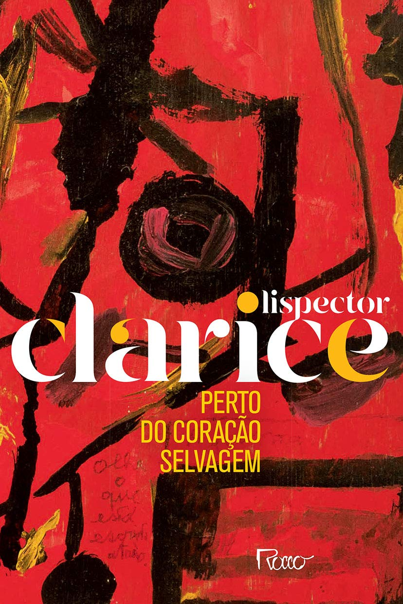

Íntima e universal, destemida e secreta, Joana "sentia o mundo palpitar docemente em seu peito, doía-lhe o corpo como se nele suportasse a feminilidade de todas as mulheres" e ela destoava do sistema patriarcal em que se encontrava inserida da mesma forma que Clarice se distanciava da literatura de seu tempo, ainda dominada pelo regionalismo e o realismo. Ambas, autora e protagonista, eram forças divergentes, porém não dissonantes, já que introduziam uma nova musicalidade, uma harmonia própria, poética e triunfal, na aspereza circundante, enquanto buscavam "o centro luminoso das coisas" sem hesitar em "mergulhar em águas desconhecidas", deixando o silêncio e partindo para a luta. Deste embate à beira do íntimo abismo, Joana torna-se uma mulher completa e Clarice, uma escritora singular e inimitável.
"Liberdade é pouco. O que desejo ainda não tem nome."
O surgimento de Perto do coração selvagem , em 1943, causou grande impacto no cenário literário brasileiro, proporcionando à autora aclamação imediata da crítica e de seus colegas escritores.
Título
Perto do coração selvagem
Autora
Clarice Lispector
Publicação
1943
Editora
Rocco
Gênero
Ficção psicológica
Páginas
208